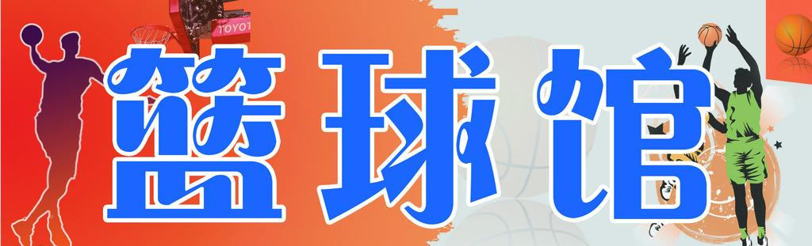
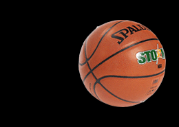
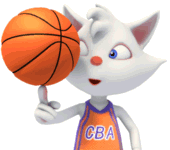

我与篮球
篮球是一项运动，不仅增强着人的身体素质，也影响着人的思想与性格。同一个人在不同的时期也会有不同的梦想，在不同的时期也会有不同的喜好，我热爱读书，也热爱运动，幼时的喜欢奔跑在绿色的草坪上，尽管什么也不做。但时间总是在行走着，它不愿等你，也不会等你。
 一年又一年，转眼间，草坪不在，人也长大了。那一次，我认识了篮球。在初一的时候，有一次从食堂吃饭回来，我在操场上看到篮球场上有一些高年级的学生在那打球，学习的枯燥让我本来走向教室的脚步停在了球场旁边，尽管以前球场上这些人经常打球，但不知为什么这一次它却格外的吸引我的目光，我开始对这项运动产生好奇与有一种蠢蠢欲动的想法，想要去尝试，想要去亲身感受一下那种热血沸腾的感觉。
由于我的身体不仅瘦弱，而且个子也不高，在以前一直都有一些自卑的心理。因此，在之前从来没有想过要去学打篮球。
这个欲望埋在我的心里之后，我之后每天都在想着，直到有一天，我有一个很好的朋友，他那天正好在球场上打球，我从旁边路过，他看见了我，和我打招呼，他可能不知是猜到了我的内心想法，拉着我让我投篮，说出来不怕笑话，我第一次投篮，的确，没有沾到篮筐，还差点砸着了路过的同学，我这个好朋友不仅没有笑话我，还鼓励我说：“第一次，都这样，多练练就行了。”
从那开始，我便迷上了这项运动，我那个朋友，一点点教我，从运球、投篮、三步上篮等等很多技巧。后来，知道现在我上了大学，我还一直喜爱这项运动，经常在闲暇时间去和几个朋友一起打篮球，尽管个子不高的我，后来也不自卑了。
篮球它不仅改变了我的体格，增强了我的自信心，而且也丰富了我的生活，我很感谢它！